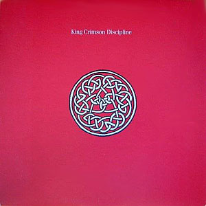
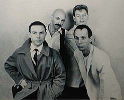
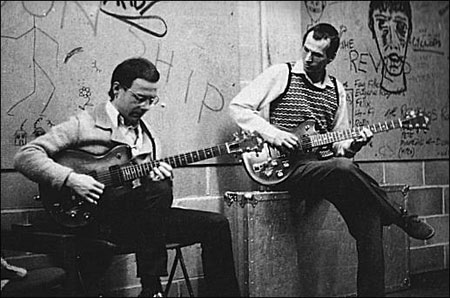
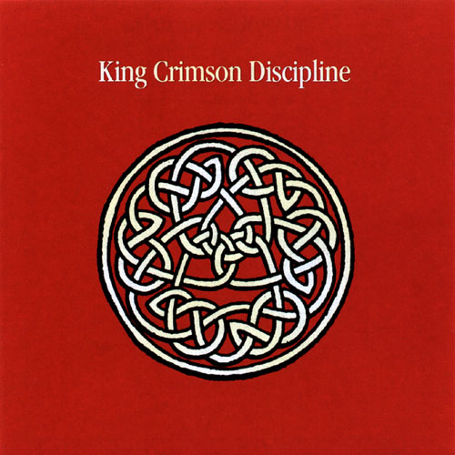
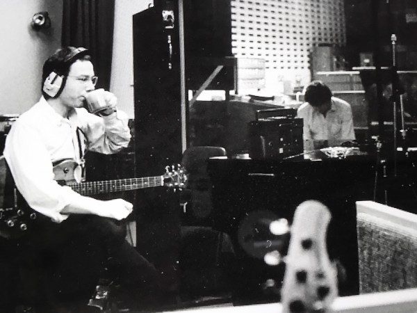

|
 Discipline
(Disciplina)
Grabado en 1981
Nueva formación y nueva música abren una nueva
etapa, distinta a las anteriores. El estilo musical dejó de ser en esencia un
rock europeo, aunque conservó una dosis. Por un lado ya no era una banda
inglesa, la mitad de sus integrantes eran estadounidenses. Por otro, Fipp había
vivido años anteriores en New York y había absorvido estilos del otro lado del
Atlántico, y allí participó como invitado en discos de grupos y artistas con
otras visiones. Los temas discotronics que había grabado en su segundo album,
por ejemplo Under heavy manners, comenzaron un camino, que siguió luego
con The league of gentlemen, y se colaron en esta nueva encarnación de KC. A la
vez, Fripp se abrió a la "world music", en especial la música
africana y la de gamelán. El new wave (estilo musical surgido
dentro del rock de fines de los '70, principalmente en USA) se coló en los temas Elephant
talk y Thela hun ginjeet, principalmente de la mano de Belew (aunque
también sirve como antecedente el tema I Zimbra, grabado por Talking
Heads en 1979 y en el que tocó Fripp como invitado en su versión original de
estudio; fue tocado también por Belew en la gira que hizo con los Talking a
fines de 1980). Mientras Indiscipline
mantiene vivo el viejo espíritu crimsoniano ya conocido, en el hermoso
instrumental The sheltering sky se ponen de manifiesto los nuevos
horizontes que busca la guitarra de Fripp, y el instrumental que cierra el disco
y que es su homónimo (creación de Fripp), es símbolo de
la tendencia experimental de la nueva formación y origen de un estilo retomado
en varias piezas en las décadas siguientes.
Formación de la banda |
Temas |
| Robert Fripp: guitarra y efectos |
1 - Elephant talk (Palabrerío de elefante) 4'41 |
| Adrian Belew: guitarra y voz líder |
2 - Frame by frame (Marco por marco) 5'08 |
| Tony Levin: bajo, stick y voz |
3 - Matte kudasai (del japonés: Por favor
espere) 3'45 (letra) |
| Bill Bruford: batería |
4 - Indiscipline (Indisciplina) 4'32 (letra) |
| |
5 - Thela hun ginjeet (anagrama de Heat in
the jungle: Calor en la jungla) 6'25 |
| |
6 - The sheltering sky (El cielo protector) 8'22 instrumental |
| |
7 - Discipline 5'02 instrumental |
Música firmada por el grupo - Letras de Adrian Belew


izq.: Belew, Fripp, Bruford y Levin - der.: Fripp, Levin,
Bruford y Belew

Fue
innovadora la forma de relacionar las dos guitarras en la banda. En algunos temas
(por ej. Matte kudasai, tramos de The sheltering sky)
hacen lo esperable: se alternan la base o parte rítmica, con la ejecución de
melodías o punteo en primer plano. Pero en otros (Frame by frame, Discipline, y otros temas de los discos siguientes) creaban fraseos
punteados simultáneos
interconectados, generalmente polirrítmicos, provocando un entretejido donde es muy difícil distinguir una
guitarra de otra (ver nota sobre Bowles más abajo).
El canto de Belew estaba influenciado por el de
David Byrne (Talking heads), pero a la vez introdujo una característica de
esta encarnación: la disonancia vocal, algo casi inexistente en las formaciones
anteriores. En una conversación con el escritor Jeff Perlah de Guitar.com en
2001, Belew reveló su interés en presentar las voces con un enfoque microtonal
oriental, donde la escala se divide. "En lugar de ser solo 12 notas, se
divide en 32 notas (en la voz). Así que tienes todas estas pequeñas notas que
están entre las notas normales".
Notas
-
En la portada del disco se lee: "La disciplina nunca es un
fin en sí mismo, solo es un medio hacia un fin".
-
El nombre del tema The sheltering sky
es en homenaje al escritor
estadounidense Paul Bowles, ya que es el nombre de su primera novela,
editada en 1949 (fue llevada al cine con el mismo nombre por el director
Bernardo Bertolucci en 1990). Bowles tuvo relación con la Generación Beat, grupo homenajeado por KC en
su siguiente album. En los años '30 y '40 también había incursionado
en la música como compositor. Fripp conoció su obra (tanto literaria como
musical) a través de Joanna Walton (pareja de Fripp en la época de su
album solista "Exposure" de 1979), quien fue a conocer al autor a
Tangier (Marruecos), donde residía desde hacía mucho tiempo. Según Fripp,
las investigaciones musicales de Bowles son antecedentes de las efectuadas
décadas después, en los '60 y '70, por otros músicos estadounidenses como
Steve Reich, Phiplip Glass y Terry Riley, conocidos como los
"padres" del minimalismo y la música repetitiva. En los '70 estos
y otros músicos estudiaron e integraron música de Bali, Java, India y
Africa como forma de volver a las raíces musicales e innovar las
composiciones de la música occidental. Brian Eno fue influenciado por esta
tendencia e indujo a Talking Heads a introducirse en ella durante la época
en que colaboró en la producción y composición de 3 discos de la banda, entre 1978 y 1980 (el tema I Zimbra,
del album "Fear of music" de 1979,
con música compuesta por Eno y David Byrne, integra ritmos africanos, al
igual que todo el album "Remain in
light" de 1980, en el que tocó Belew como invitado). Esta
encarnación de KC también tomó esa
influencia, tanto en las estructuras rítmicas (por ejemplo en el tema Thela hun ginjeet)
como en el uso de instrumentos percusivos (en The sheltering sky
Bruford usa un tambor africano de hendidura, similar a una caja, para ejecutar repetitivamente un ritmo durante
toda la pieza; en relación a este tema es válido nombrar como antecedente
la canción de Talking heads Listening wind, del ya citado album "Remain in
light"). KC ya había usado instrumentos percusivos
africanos a través del percusionista Jamie Muir en el album "Larks' tongues in
aspic" del '73 ("thumb piano", llamado kalimba en Africa, en
la intro del primer tema del disco, y el talking drum). En la formación de
los '80, para
lograr un mayor acercamiento a los ritmos africanos Bruford aumentó el uso
de los timbales y minimizó el de los platillos. Una de las músicas
no occidentales más estudiadas por Reich, Glass y Riley fue la de gamelán, tradicional de
Indonesia, que años antes había sido investigada por otros músicos
occidentales,
entre ellos John Cage. El gamelán es un conjunto de instrumentos percusivos
(metalófono, xilófono, tambores, gongs); suelen ser tocados por varios ejecutantes al mismo tiempo,
conformando una orquesta (donde generalmente también se integran algunos
instrumentos de cuerda pulsada y flautas de bambú), provocando estructuras rítmicas
complejas y varias melodías en contrapunto, y donde todos los ejecutantes
aportan para una música colectiva, con margen nulo para protagonismo o
lucimiento individual (algo incomprensible en la cultura occidental). Esta
forma de abordar la música encajaba totalmente con la filosofía de Gurdjieff y
Bennett que había atrapado a Fripp, y Bowles ya había incursionado en ese
terreno. Dijo Fripp en una entrevista a fines de 1981: "Sobre Paul Bowles, una amiga mía llamada Joanna Walton, quien me ayudó en el
álbum 'Exposure', visitó a Bowles en Marruecos y a través de esta
conexión descubrí su obra que tanto me ayudó a embellecer nuestra música.
Bowles trabajó en los años '40 en el área musical que Steve Reich y Philip
Glass desarrollaron en los '70, lo que vuelve un poco a la respuesta de que estar en el avant-garde es siempre relativo. En los años '80 King
Crimson es acusado de tomar ideas de Reich y Glass, pero nadie critica a Reich
ni a Glass por usar las ideas de Bowles de 30 años antes".
-
Antes de ensamblarse esta formación de
KC, Fripp ya tenía compuestas las bases de dos temas de este disco. En marzo
de 1980 grabó un ensayo con The league of gentlemen durante el cual tocaron
la base instrumental de lo que luego sería la hermosa balada Matte kudasai,
con una cadencia similar a la de la canción North
star de su album solista "Exposure" de 1979. En enero del '81 grabó un
ensayo con Bruford y Jeff Berlin (bajista que había participado en trabajos
solistas de Bill), en el cual tocaron la base de lo que sería el tema Discipline.
Estos registros pueden encontrarse en el sitio web de DGM. Sobre Discipline:
"Esta pieza fue el primer contacto musical entre Bruford y Fripp para
la nueva banda. El guitarrista había ido a casa de Bruford en Surrey y
terminó tocando junto al baterista y al bajista Jeff Berlin, del grupo de
Bruford. Dijo Bill: «Jeff
y yo habíamos escrito un ostinato precioso en 17/16 que se convirtió en la
base de Discipline y Robert estaba sentado en el sofá y dijo: 'Tengo
algo que podría ir con eso'. Así que terminamos los tres tocando una versión
preliminar de lo que se convertiría en Discipline»."
(*)
Por supuesto adquirió un sonido gamelán al agregarse la otra guitarra en
la versión grabada para el album.
-
Sobre Elepahnt talk: "Al
igual que en «Under Heavy Manners» con David Byrne, Fripp había preparado
una lista de palabras para que Belew las cantara. Pero Belew se sentía incómodo
con tal recitación y, al final, se le ocurrió su propia lista, pronunciada
con una alegre declamación, aunque su concepto general se asemeja al de la
producción solista de Fripp."... "Hay una urgencia ondulante que
se extiende por toda la pieza, y el clamor desconcertante se intensifica con
la conmovedora llegada de la pirotecnia cargada de efectos de Belew. Desdeñando
los convenientes sonidos preestablecidos, el exótico arsenal de sonidos a
disposición de Belew es el resultado de una rigurosa experimentación con
todos los elementos de su equipo, todo cuidadosamente documentado en un
pequeño cuaderno. El efecto de elefante trompeta se logró mediante la
combinación de un pedal de efectos Big Muff y un flanger configurado para
subir y bajar el tono. Con Belew deslizando manualmente la nota hacia arriba
en el diapasón, la colisión resultante de sonido y efecto suena
notablemente similar a un elefante muy agitado, que se acerca rápida y
directamente al oyente." (*)
-
El título y la letra de Thela hun ginjeet
se basan en una jornada en la que Belew "investigó" en persona la
delincuencia y peligrosidad del barrio londinense Notting Hill Gate.
-
Sobre The sheltering sky: "Seductora e
inescrutable a la vez, la música, que se despliega gradualmente, surgió
durante uno de los primeros ensayos del grupo. Fue totalmente improvisada,
en gran parte tal como aparece en el álbum. Gracias a la política de
grabar sus sesiones, la banda pudo volver atrás y reaprender lo que había
surgido mágicamente.
" (*)
-
Indiscipline nació de una
improvisación de Bruford con todo su equipo percusivo, a la que se fue
acoplando el resto. Belew empezó a cantar (mejor dicho, a recitar, y de ese
modo grabó la versión final de estudio) basándose en una carta de su
esposa que tenía consigo. El título no tiene relación con la letra,
por lo que se sospecha que tiene que ver justamente con el hecho
de que se originó en una improvización, durante la cual se permitieron
cierta "indisciplina".
(*): Sid Smith, de su libro In the court of
King Crimson
-
El símbolo de la portada fue tomado por Fripp de la tapa
de una revista llamada Impressions (editada en 1981 por un grupo de
Claymont seguidor de Gurdjieff y Bennett), creyendo que se trataba de una marca antigua. En
realidad era un trabajo de John Kyrk (miembro del grupo de Claymont), basado en un patrón de nudos celtas,
conocido como Eneagrama. Al enterarse, Fripp le pidió disculpas a Kyrk y lo
retribuyó económicamente, comprometiéndose a no usarlo en el futuro (en
ediciones posteriores del disco se usó un diseño similar, realizado por
Steve Ball, que luego se convirtió en el logo del sello DGM, fundado por
Fripp en 1992). Tal vez a Fripp lo cautivó el
entretejido, que en forma de imagen reflejaba la música colectiva, sin
egocentrismos, que debía realizar esta nueva encarnación de KC.
 
Arriba izquierda: diseño original del album, de John Kirk;
derecha: diseño posterior alternativo, de Steve Ball. Abajo: logo del
sello DGM y Fripp en estudio de grabación, mayo del '81.


|
 Discipline
Discipline